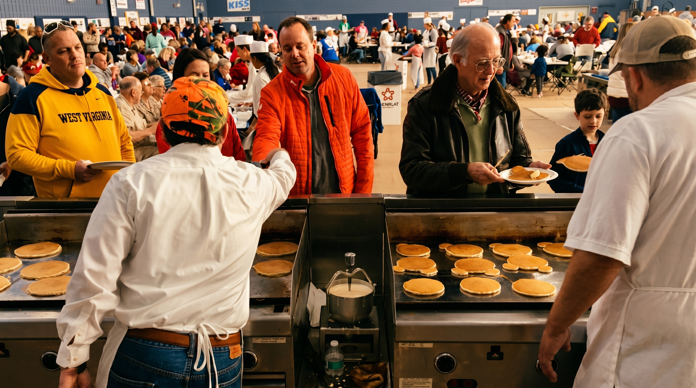

Winchester's Signature Tradition · Since 1922
Community
Pancake Day
Every spring, Winchester gathers at Jim Barnett Park for a literal ton of sausage, thousands of pancakes, and a morning that funds local grants, scholarships, and youth programs.
Spring 2026 was held April 25 at Jim Barnett Park War Memorial Building. Next date TBD — follow us on Facebook for announcements.
What to Expect
Pancake Day is more than a fundraiser — it's Winchester's community tradition. Each year, Kiwanis members fire up multiple cooking stations inside the Jim Barnett Park War Memorial Building, serving hot pancakes and sausage to thousands of guests who come for dine-in or take-out service.
Roving coffee servers keep the drinks flowing. Guests enjoy orange juice, milk, and coffee alongside fluffy pancakes and savory sausage in a warm, festive atmosphere that brings the whole community together.
Don't forget — we accept non-perishable food donations at the door, with collected goods going directly to community distribution. Every visit makes a difference in multiple ways.
Hours
8:00am – 4:00pm
Location
Jim Barnett Park
War Memorial Building
1001 E Cork St, Winchester, VA 22601
Format
Dine-in and take-out
Children 3 & under: Free
Frequency
Annual spring event
Check back for next date
Thanks for Supporting Pancake Day
The April 25, 2026 event has concluded. Children 3 and under ate free, guests brought non-perishable food donations, and proceeds supported local children and families.
Ask About Next Year's EventTicket sales reopen when the next date is announced.
Multiple cooking stations
Roving coffee servers
Coffee, milk & juice
Dine-in or take-out
Children 3 & under FREE
Every Ticket Makes a Difference
Pancake Day proceeds support multiple causes — all directly benefiting children and families in Winchester.
ChildSafe Center
Twenty percent of net proceeds go directly to the ChildSafe Center, supporting child advocacy and family safety in the Winchester area.
Major Beneficiary
The 2026 Pancake Day's designated Major Beneficiary is the I'm Just Me Movement — a cause chosen to receive the largest share of fundraiser proceeds.
Donation Drive
Non-perishable food donations are collected at the door and distributed directly to community members in need across Winchester.
Join Us in the Kitchen
Pancake Day is an all-hands event. Kiwanis members, Key Club students, Builder's Club members, and community volunteers all work together to make it happen — cooking, serving, pouring coffee, and welcoming guests.
If you're interested in volunteering or becoming a Kiwanis member in time for next year's event, reach out to us — we'd love to have you on the team.